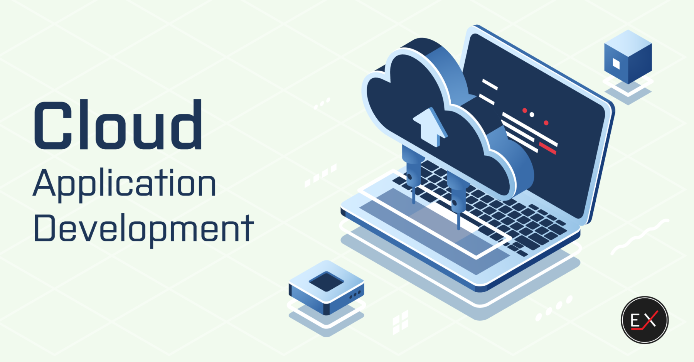

معماری فنی سیستم
معماری چند لایه و میکروسرویس
معماری سیستم ما بر پایه میکروسرویسها طراحی شده که انعطافپذیری، مقیاسپذیری و قابلیت اطمینان بالایی را تضمین میکند.
لایههای اصلی سیستم
-
لایه ارتباطات
پروتکلهای MQTT و WebSocket برای ارتباطات بلادرنگ و کارآمد
-
لایه داده
ذخیرهسازی توزیعشده با MongoDB و Redis
-
لایه پردازش
پردازش بلادرنگ دادهها با Apache Kafka و Spark

پروتکلهای ارتباطی
MQTT
- • مصرف بهینه پهنای باند
- • قابلیت اطمینان بالا
- • پشتیبانی از QoS
- • مناسب برای IoT
WebSocket
- • ارتباط دوطرفه
- • تأخیر کم
- • مناسب برای داشبورد
- • پشتیبانی از رویدادها
REST API
- • استاندارد و ساده
- • قابلیت کشسازی
- • مستندات OpenAPI
- • یکپارچهسازی آسان
تکنولوژیهای مورد استفاده
بکاند
-
 Python
Python
-
 Go
Go
پایگاه داده
-
 MongoDB
MongoDB
-
 Redis
Redis
-
 InfluxDB
InfluxDB
فرانتاند
-
 React
React
-
 Redux
Redux
-
 Tailwind CSS
Tailwind CSS
DevOps
-
 Docker
Docker
-
 Kubernetes
Kubernetes
-
 Jenkins
Jenkins